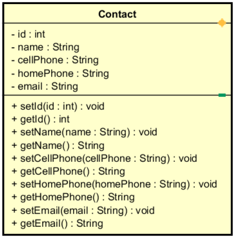

Por padrão, o banco de dados utilizado é o SQLite, que atualmente se encontra na versão 3.31.1. A documentação oficial está disponível no site do SQLite disponível em: SQLite 3 - Documentação Oficial.
Uma breve explicação, o SQLite é uma biblioteca em linguagem C, open source, que implementa um banco de dados SQL embutido, ou seja, não tem processo servidor separado, lendo e escrevendo diretamente no arquivo de banco de dados no disco. O android utiliza o SQLite por ser uma biblioteca leve, utilizando dentre 250kb a 500kb, por ser multi-plataforma, podemos copiar livremente um banco de dados entre sistemas de 32bits e 64bits.
O SQLite é nativo no sistema operacional android, ou seja, está disponível em todos os dispositivos que utilizam o google android, sua utilização não requer qualquer configuração ou administração de banco de dados.
Para utilizá-lo precisamos criar uma classe que herde de SQLiteOpenHelper, implementar os métodos obrigatórios e construtor da classe. Em seguida, definir os comandos SQL para criar e atualizar o banco.
O banco de dados é gerenciado automaticamente pela plataforma Android. Quando criado, o banco de dados por padrão é armazenado no diretório /data/data/<nome-do-pacote-utilizado>/databases/nome-do-arquivo.sqlite.
O aplicativo que defini para o aprendizado do uso de banco de dados em dispositivos móveis é uma agenda de contatos. Nessa agenda de contatos vamos gravar nossos contatos com os atributos nome, celular, telefone residencial e email. Note, que nem todos possuem telefone residencial, então esse é o único atributo não obrigatório da nossa aplicação.
Na nossa agenda poderemos adicionar, editar e excluir contatos e, por fim, também adicionaremos um plus que é discar para o contato a partir da nossa agenda.
Abaixo a modelagem da classe Contact que representa de forma abstrata um contato de nossa agenda.

Vamos utilizar um padrão de projetos que divide nossas funcionalidades em camadas, visando a organização, manutenção e segurança dos nosso app. Para isso vamos criar as camadas descritas a seguir: